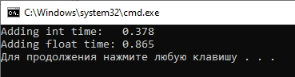

В чем смысл вычислений при помощи арифметики с фиксированной точкой. Смысл в том что бы заменить вычисления double, float на вычисления с целыми числами - и получить тот же результат что с использованием double, float.
Например у нас есть число 50 нам надо его умножить на 0.5 - результат будет 25. Но в этом расчете используются числа с плавающей точкой (double, float).
Этот расчет мы можем заменить на использование целых чисел - число 50 умножить на 100 и разделить на 200 - будет тот же самый результат 25 как и при использовании чисел с плавающей запятой. Это называется арифметика с фиксированной точкой.
Загрузить архив с примерами ЗДЕСЬ.
Давайте посмотрим на следующий код:
#include <windows.h>
#pragma comment (lib,"winmm.lib")
#include <iostream>
using namespace std;
int main()
{
//время начала цикла
DWORD start;
//время конца цикла
DWORD end;
//переменная для сложения целых чисел
int iret = 0;
//переменная для сложения чисел с плавающей точкой
float fret = 0;
//время сложения целых чисел
float it;
//время сложения чисел с плавающей точкой
float ft;
//работаем с целыми числами
start = timeGetTime();
for ( unsigned int i = 0; i < 100000000; i++ )
{
iret += 1;
}
end = timeGetTime();
it= (end - start) / 1000.0f;
//закончили работать с целыми числами
//работаем с числами с плавающей запятой
start = timeGetTime();
for ( unsigned int i = 0; i < 100000000; i++ )
{
fret += 1.0f;
}
end = timeGetTime();
ft= (end - start) / 1000.0f;
//закончили работать с числами с плавающей запятой
//выодим результат на экран
cout << "Adding int time: " << it << endl;
cout << "Adding float time: " << ft << endl;
return 0;
}
Что делает это код? В первом цикле мы складываем 100000000 чисел int, во втором цикле мы складываем 100000000 чисел float и засекаем время начала и конца обеих циклов. В результате работы этой программы мы увидим следующий экран:
Как видим сложение чисел int происходит во времени больше чем в два раза быстрее, чем сложение чисел float.
Давайте посмотрим еще один пример кода:
#include <iostream>
using namespace std;
int main()
{
int a1 = 1 << 8;
int a2 = 2 * 2 * 2 * 2 * 2 * 2 * 2 * 2;
cout << a1 << endl;
cout << a2 << endl;
return 0;
}
Операция левого поразрядного сдвига << или правого поразрядного свдига >> выполняюстя быстрее чем операции умножения или деления. Поэтому расчет a1 и a2 выдадут один тот же результат число 256 но расчет a1 с использованием свига будет выполнятся быстрее. Операция порязрядного свига влево - это умножение на 2, операция поразрядного сдвга вправо- это деление на 2. Поэтому иногда числа сдвигаются влево или вправо на определенное число бит, что бы не делить или не умножать на 2 - свиг работает быстрее.
Пример как работает арифметика с фиксированной точкой можно загрузить /src/02.005-fixed_math/Sample_Fixed_Math. Код примера показан ниже.
#include <windows.h>
#include <math.h>
#define FIXP26_SHIFT 26 //используется для 1/z буферизации
#define FIXP22_SHIFT 22 //используется для u/z, v/z наложения текстуры с учетом перспективы
int main(void)
{
//берем глубину сцены
int z = 15;
//берем текстурные координаты
int tu = 255;
//переводим значения для арифметики с фиксированной точкой
int iz = ( 1 << FIXP26_SHIFT ) / z;
int itu = ( tu << FIXP22_SHIFT ) / z;
//проивзодим необходимые расчеты со значением itu и iz
//например интерполируем значения
//ztu = 255 = tu
//получаем обратно текстурные координаты
//с учетом глубины (текстурирование
//с учетом перспективы) для извлечения
//пикселя из массива пикселей (изображение rgb)
int ztu = (itu << (FIXP26_SHIFT - FIXP22_SHIFT )) / iz;
return 0;
}
Код примера - текстурирование куба с применением арифметики с фиксированной точкой - можно загрузить /src/02.005-fixed_math/Perspective_Tex1_Fixed_Math.
В чем заключается смысл математики с фиксированной точкой? Мы float число преобразуем в int. Далее выполняем с этим int необходимые вычисления. Затем обратно преобразуем int в float и используем этот float где нам нужно в программе.
Почему это делается? Процессор в компьютере гораздо быстрее работает с целыми числами чем с числами с плавающей запятой. То есть все операции с числами int выполняются быстрее чем с числами float.
Мы можем float число превратить в int если умножить float на 65536 к примеру. Или можно привести float к int и этот int сдвинуть на 16 разрядов в влево - то есть то же что умножить на 65536, но только операцию свига процессор выполняет быстрее чем умножение. Потом мы выполняем с этим int необходимые вычисления, и когда нужно его использовать преваращем в float сдвигая int на 16 разрадов в право (что аналогично делению на 65536).
В следующем примере показано как делали в старых играх для сокращения расчетов. Пример можно загрузить /src/02.005-fixed_math/3D_Cube_INT. Используются заранее вычисленные таблица синусов, косинусов, и глубины ZTable. За 360 градусов принимали число 65536, один градус в этом случае равен 182, далее выполняли целочисленные расчеты, избегая float значений. В примере когда ассемблерная функция возвращает значение синуса или косинуса, значение имеет диапазон от 0 до 16384 который накладывается на обычный диапазон от 0 до 1 (см.конец таблицы в файле MATH.ASM там максимальное значение равно 0x4000 что в десятичном виде 16834 или в обычном значении 1). В примере используется математика с фиксированной точкой. Здесь в коде есть косинус делить на синус - это будет котангенс, или 1 поделить на тангенс, что соответствует расчету матрицы проекции. ZTable создавалсь в примере для сокращения математических вычислений (и экономии времени) в каждом кадре, так делалось когда то на медленных компьютерах.
Например косинус 60 градусов равен 0.5 и у нас есть координата x = 100. Предположим мы поворачиваем эту вершину с этой координатой, и при повороте умножаем на матрицу вращения, то есть происходит:
x * 0.5 = 100 * 0.5 = 50
Но здесь происходит операция с float - что затратно на старых компьютерах. Поэтому, float можно избежать. К примеру возмем такую таблицу, в которой cos(90) = 0 и cos(0) = 16384, углы у нас меняются от 0 до 65536 и это значит от 0 до 360 градусов. То есть примем в нашей таблице cos(0) = 16384 это 1.0 в обычном представлении, а cos(65536) это 0 (90 градусов в обычном понимании. То есть по нашей схеме 60 градусов ≈ 10922.666, и мы берем cos(60) = 0.5 или cos(10922.666) = 8192.
В нашем случае углы мы приняли от 0 до 360 градусов за числа от 0 до 65536, и косинус от 0 до 1.0 приняли от 0 до 16384.
То есть 0.5 это значение косинуса по нашей таблице равно 8192, а 1.0 по нашей таблице это будет 16384.
Теперь вместо того что бы x * 0.5 = 50 мы сделаем так:
x = x * 8192 / 16384 = 50
Получаем один и тот же результат с использованием математики с фиксированной точкой fixed point math (FPM).
Для современных систем проще и эффективнее использовать floating-point. Теоретически fixed-point быстрее на системах без FPU (например, старые процессоры или embedded-устройства).
На современных компьютерах floating-point (FP) вычисления обычно работают быстрее, чем fixed-point, несмотря на то, что fixed-point традиционно считался более эффективным для систем без FPU (например, старых процессоров или микроконтроллеров). Почему floating-point быстрее на современных CPU?
Когда fixed-point всё ещё полезен?
Вывод - Для современных ПК и мобильных CPU (с FPU/SIMD) floating-point почти всегда быстрее fixed-point. Fixed-point имеет смысл только в узких сценариях (микроконтроллеры, строгие требования к детерминизму).